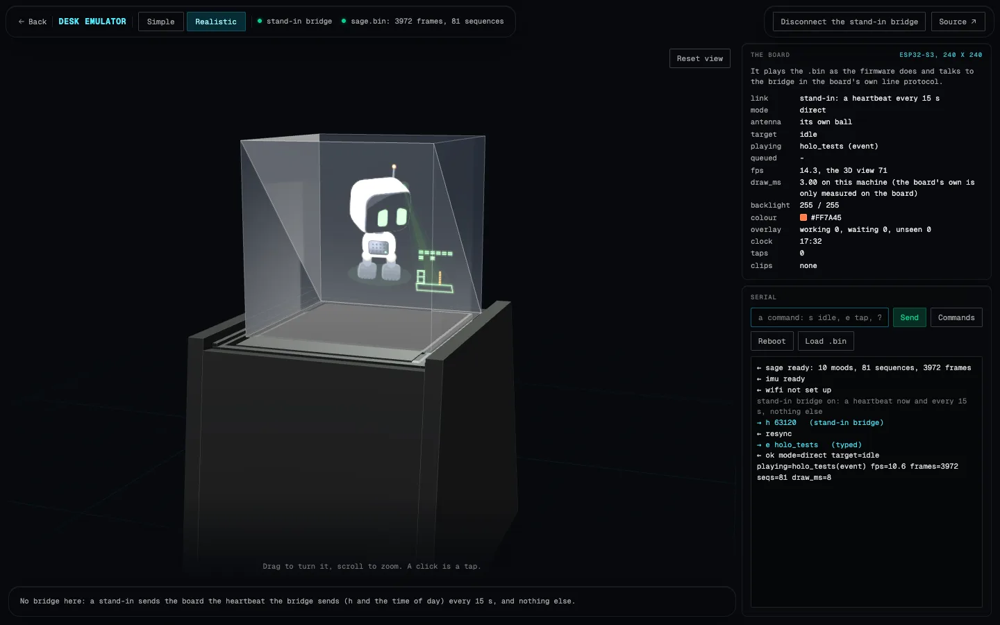
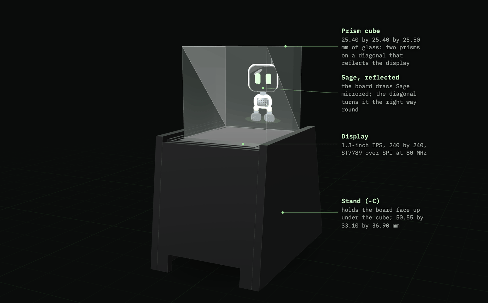
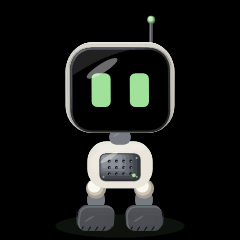
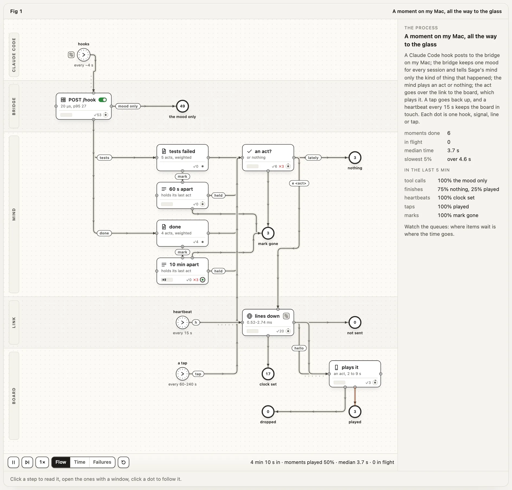

Sage on the desk
Sage is the robot that lives on destbreso.com. This is its body on my desk: a small glass prism display that reacts to my work with Claude Code.
Everything here runs in your browser, the same way the board runs it. No install, no account.

The live demo
It's the board's emulator. It plays the same frames the real board will play, and it shows them on the whole device in 3D.
- Drag to turn the device. Scroll to zoom.
- Click the glass. That's a tap, and Sage answers it.
- Type a command in the Serial box, like
e holo_tests. The Commands button lists every one. - Switch to Simple to see the bare board from the front.
- My Mac isn't here, so Sage lives on its own, with its antenna dark. The button at the top connects a stand-in for my Mac, and you can watch Sage find it.

More to try
Each of these is a page of the repository, and runs in your browser too.
-

The hardware, taken apart Every part at its real size, down to the layers of the display. Click one to see what it is. Open -

Every mood and act Pick any of Sage's moods and acts and watch it play. Open -

How a moment reaches the glass A quarter of an hour of my work, simulated, from a Claude Code hook to the board. Put the Mac to sleep and watch. Open